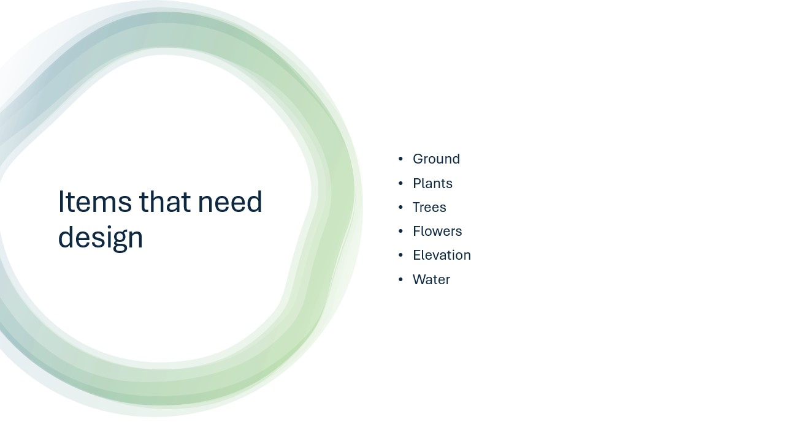
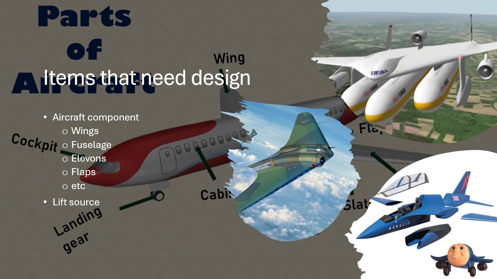

Idea & Problem Space

The idea is to design a system where people can build their garden using physical blocks, so they can see what it will look like before actually planting it.
A problem we noticed is that it is often hard to imagine how a garden will turn out, especially when thinking about layout, spacing and placement of plants.
Goal
The goal is to create a playground where users can experiment with different garden designs. There is no single correct outcome, which makes it more open and closer to tinkering.
People should be able to try different layouts, change things easily, and explore ideas before making real decisions.
Materials (Seed, Prompt, Toolbox)
The main materials are modular building blocks that represent different garden elements. These include ground pieces, plants, trees, flowers, elevation and water.
The blocks act as a prompt, because they already suggest what you can build, but they still allow many different combinations.
This creates wide walls, since the same set of blocks can result in many different garden designs.

Scaffolding & Facilitation

Some guidance is needed at the beginning, especially to explain what each block represents and how they can be combined.
After that, users should be free to explore on their own. Too much instruction would limit creativity, so the goal is to support without controlling the process.
Process & Space
The playground should be set up in a space where people can easily move things around, test different layouts and work together.
The process is iterative: build something, look at it, change it, and improve it. This fits well with tinkering because the design is never final.

Reflection
I think this idea works well as a playground because it has wide walls and allows many different outcomes. People can approach it in their own way, depending on what kind of garden they want to design.
At the same time, it is still structured enough through the blocks so that it is not completely overwhelming. This balance between structure and freedom is important in tinkering.